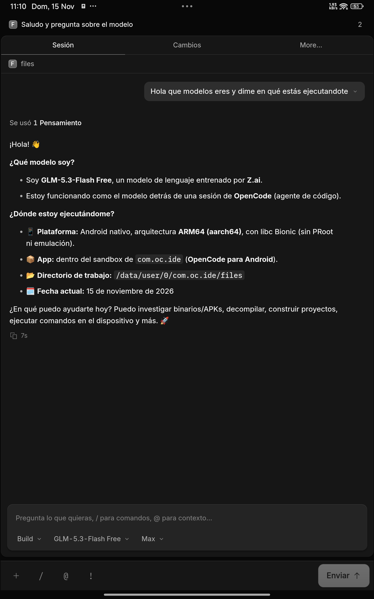
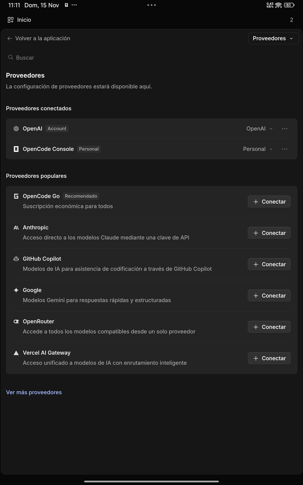
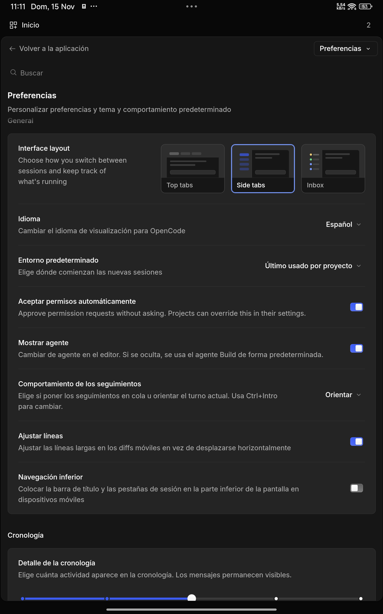
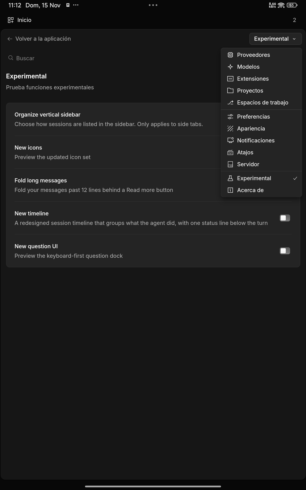

OpenCode for Android
Standalone OpenCode v2.3.0 autonomous coding IDE and 100% Pure Android Bionic ARM64 APK (com.oc.ide). Dynamically linked directly against /system/bin/linker64 with 75+ AI providers, persistent Rust opencode-pty v8 + oc-box, and zero-restart hot-reloading ARM64 MCP extensions — zero PRoot, zero Glibc shim, zero Termux dependency.

Pure Bionic ARM64 OpenCode v2.3.0 session running natively on Android silicon at physical UFS speeds.
100% Pure Android Bionic & 10-byte prefix parity
By engineering a 10-character Android package ID (com.oc.ide == com.termux), /data/user/0/com.oc.ide/files/usr maintains exact byte-length parity with standard Bionic toolchains — running clang, rust, python, nodejs, and ghidra via direct kernel execve().
| Subsystem | OpenCode for Android (by Yhoanes) | PRoot / Containerized Ports |
|---|---|---|
| Binary linkage | Pure Bionic ARM64 PIE linked directly to /system/bin/linker64, libc.so & libdl.so |
ptrace syscall interception or heavy Glibc translation layers |
| Session bootstrap | < 200 ms splash-to-ready handshake injecting 30-day opencode_session_45167 into CookieManager |
Manual CLI startup, port forwarding, and browser token copy-paste |
| Terminal & PTY | Native Rust opencode-pty v8 persistent daemon (2 MiB ring replay) + Rust oc-box v0.3.0 |
Fragile background tabs that drop PTY streams when switching apps |
| MCP & Skills | Mounted natively in Settings → Extensions → Plugins with zero-restart hot-reload | Manual JSON editing and full server restarts |
| Storage access | Android SAF folder picker (ACTION_OPEN_DOCUMENT_TREE) + SELinux virtual-root directory bridge |
Blocked on scoped storage or restricted to internal sandbox |
Core engineering pillars
Built with a deterministic 11-phase Gradle-free APK pipeline (aapt, javac, d8, apksigner) that compiles on Linux or directly on-device inside Android.
75+ AI providers & multi-session IDE
Connect OpenAI, Anthropic Claude, Google Gemini, GitHub Copilot, OpenCode Console / Go, OpenRouter, Vercel AI Gateway, DeepSeek, Z.ai, or local Ollama endpoints with live diffs, LSP diagnostics, and subagents.
Native Rust oc-box v0.3.0 + opencode-pty v8
4-thread parallel pkg package manager, autonomous oc-daemon background scheduler, SIMD oc-fix-paths shebang rewriter, native oc-notify tray alerts, and zero-loss 2 MiB PTY ring replay.
Zero-overlay native Extensions → Plugins
Installs compiled ARM64 Rust MCP servers directly inside OpenCode's native settings UI, synchronizes opencode.json (mcp + skills.paths), and hot-reloads instantly via POST /api/location/reload.
Mobile lifecycle & 1-tap GitHub OTA
Automatic SSE/WebSocket background-resume recovery (oc:host-resume), Chrome Custom Tabs OAuth (xdg-open), Shizuku / ADB Bridge integration, and in-app GitHub Releases OTA updates inside Settings → About.
Real device walkthrough
Captured directly on physical Android ARM64 hardware running com.oc.ide on loopback port 45167.
Pure Bionic OpenCode v2.3.0 session executing direct kernel execve() toolchains on Android.

Native ARM64 MCP servers mounted directly inside Settings → Extensions → Plugins.

Multi-provider authentication hub supporting 75+ cloud and local LLM endpoints.

Adaptive workspace layouts, mobile diff wrapping, and touch navigation controls.

Complete settings hierarchy with experimental toggles and live GitHub Releases OTA checks.
1-tap native ARM64 MCP plugins
Install, toggle, or uninstall compiled Android ARM64 Rust MCP servers directly from Settings → Extensions → Plugins with instant zero-restart hot-reloading.
| Plugin | Version | Capabilities on Android ARM64 |
|---|---|---|
| Craft Anything + Ghidra | v0.5.0 |
335 native Rust MCP tools (< 50 MB RAM) for ELF/PE/Mach-O, APK/DEX, .NET/NativeAOT, WASM, ESP32/UF2, Godot .pck, Unity IL2CPP & Wii .dol + native ARM64 Ghidra 12.1.4 |
| AGY Video Gen | v1.0.0 |
Native Rust AI video diffusion engine (videogen_create, videogen_bridge, videogen_extend, videogen_upscale) with CAS GPU super-resolution |
| AGY Video Studio | v4.0.0 |
60 FPS Motion Design & universal video editor with h264_mediacodec hardware encoding, multi-track B-Roll, Karaoke captions & -14 LUFS mastering |
| Game Studio 2D/3D | v2.0.0 |
16 Rust MCP tools + C++/Rust GDExtension compiler + 100% local offline signed .apk builder & 120–144 FPS Vulkan profiler for Godot 4 |
| Unity Studio Android | v1.0.0 |
13 Rust MCP tools + ported unity-cli v1.0.0 for Unity 6.3 LTS URP 2D/3D scaffolding, YAML/.meta auditing, $0 GameCI builds & live rish debugging |
| AGY ADB Bridge | v1.0.1 |
Persistent uid=2000(shell) wireless ADB 6-digit pairing (127.0.0.1:5555 offline TCP), zero-polling mDNS discovery & 2s Shizuku watchdog |
| GitHub MCP & Chrome DevTools | v2.1.1+ |
91 native ARM64 GitHub tools (libagy-go-dns.so Bionic OAuth) + headless ARM64 Chromium DevTools Protocol automation |
Frequently asked questions
Does OpenCode for Android use PRoot, Termux, or a Glibc shim?
No. It executes 100% natively in Android userspace using Android's system /system/bin/linker64 and Bionic libc.so inside its own standalone sandbox (com.oc.ide). You do not need Termux installed, and there is zero syscall virtualization overhead.
Does it require Root?
No. Everything runs out of the box on unrooted Android 9.0+ phones and tablets. Connecting optional AGY ADB Bridge or Shizuku (rish) unlocks elevated uid=2000(shell) capabilities such as silent 1-tap APK installation, logcat diagnostics, and live 144 Hz game profiling.
Can I build OpenCode for Android from source without Android Studio or Gradle?
Yes. Run bash build.sh (for com.oc.ide on port 45167) or bash build.sh --dev (side-by-side com.oc.dev on port 45168) on Linux or directly inside Android using aapt, javac, d8, zipalign, and apksigner.